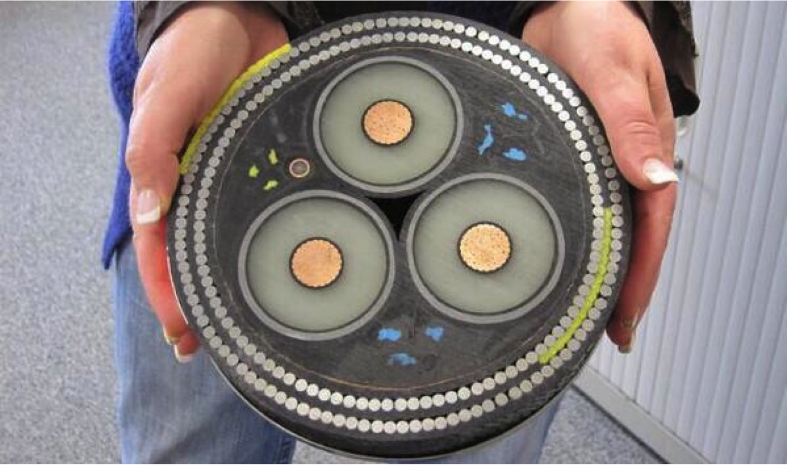

Raphael Luta
What is this ?

Quel bénéfice moyen représente pour un Hedge Fund une diminution de latence de 1ms entre Londres et New York ?
Comment est-ce possible de faire 22,5 Moctets de transfert par seconde sur une interface à 100 Mb/s ?
$ ethtool eth0
Settings for eth0:
Speed: 100Mb/s
Duplex: Full
$ ifconfig eth0
Eth0 Link encap:Ethernet HWaddr 4c:72:b9:67:21:75
inet addr:5.135.179.200 Bcast:5.135.179.255 Mask:255.255.255.0
UP BROADCAST RUNNING MULTICAST MTU:1500 Metric:1
$ ab -n 1000 -c 1 http://5.135.179.200:8000/
Benchmarking 5.135.179.200 (be patient)
Document Path: /
Document Length: 42012 bytes
Concurrency Level: 1
Time taken for tests: 18.349 seconds
Complete requests: 10000
Failed requests: 0
Total transferred: 422860000 bytes
HTML transferred: 420120000 bytes
Requests per second: 544.98 [#/sec] (mean)
Time per request: 1.835 [ms] (mean)
Time per request: 1.835 [ms] (mean, across all concurrent requests)
Transfer rate: 22504.84 [Kbytes/sec] received
$ netstat -rn
Destination Gateway Flags Refs Use Netif Expire
default 192.168.1.254 UGSc 18 0 en1
127 127.0.0.1 UCS 0 0 lo0
127.0.0.1 127.0.0.1 UH 6 502225 lo0
192.168.1 link#5 UCS 6 0 en1
192.168.1.101 127.0.0.1 UHS 0 0 lo0
Je veux envoyer un fichier DivX (600 Mo) à un ami qui habite à 1000 m.
Quel est le moyen d’envoi le plus rapide ?
Le proxy TCP ci-dessous fonctionne mais les performances sont catastrophiques. Comment l’améliorer ?
def srvDst = args[0],b
def bufferSize = 128 * 1024 // 128 kB
def server = new ServerSocket(4444)
server.setReceiveBufferSize(bufferSize)
while(true) {
server.accept { socket ->
socket.setTcpNoDelay(true)
def client = new Socket(srvDst,8080)
client.setTcpNoDelay(true)
client.setSendBufferSize(bufferSize)
socket.withStreams { sinput, soutput ->
client.withStreams { cinput, coutput ->
while ((b = sinput.read()) >= 0) coutput.write(b)
}
}
client.close()
}
}